About Me
I’m a MSc Robotics student at the University of Manchester with a background in Computer Science. My studies and projects have given me strong technical skills in computer vision, machine learning, data analysis, AI, and robotics, supported by a solid mathematical foundation. Beyond robotics, I have broad computer science experience, from FPGA design in Verilog and processor architecture to operating systems, distributed systems, and software engineering. I’ve applied these technologies to deliver insightful, practical results from analyzing financial data to developing multi-drone autonomous pursuit systems. I’m passionate about technological advancement and driven to stay at the forefront of emerging trends. My career goal is to apply and expand these tools to solve real-world challenges: whether through designing autonomous agents, interpreting complex data, or advancing intelligent systems.
Research Interests:
- Autonomous and intelligent robotic systems
- Machine learning and computer vision
- Reinforcement learning and adaptive control for physical agents
- Data analysis, processing, and engineering
Skills
Programming & Software Development
- Python, C++, C, Java, MATLAB, HTML, CSS, SQL, Assembly
- Version Control: Git, GitHub
- Operating Systems: Linux (advanced), Windows
AI, Machine Learning & Data Science
- PyTorch, TensorFlow, NumPy, Pandas, scikit-learn, OpenCV, CUDA, Matplotlib
- Experience with data analysis, model training, and deployment for computer vision and AI tasks
Robotics & Control Systems
- ROS2, Gazebo, MATLAB Simulink
- Experience with multi-agent systems, autonomous navigation, and sensor integration
Hardware & Embedded Systems
- FPGA design (Verilog), digital logic design, CAD design
Software Engineering & Systems
- Object-oriented programming, algorithm design, distributed systems, operating systems fundamentals, agile teamwork
- Containerization & Deployment: Docker (used for real-time multi-agent environments, robotics compatibility, and visualization)
Languages
- English (Fluent), Macedonian (Fluent), Serbian/Croatian (Fluent), German (Intermediate), Turkish (Intermediate)
Projects
Robotics and Autonomous Systems
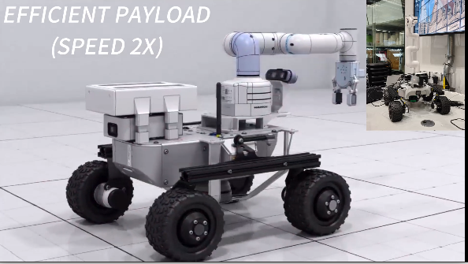
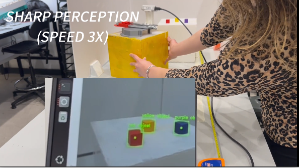
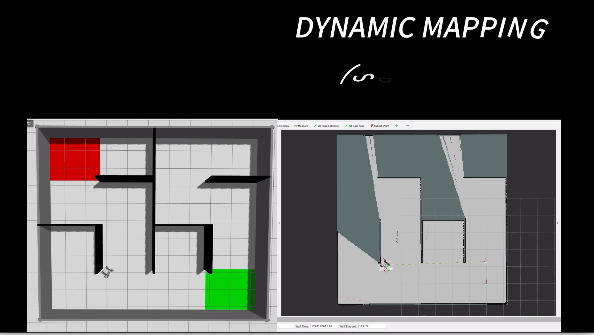
Autonomous Robotic System for Object Search, Localisation, and Manipulation
Goal: To develop a full-stack autonomous robot capable of mapping, navigating, detecting, and manipulating objects in a real-world environment.
Contribution: I led the vision and manipulation subsystems, implementing RGB-D perception, 3D object localisation, and coordinated grasp execution within a distributed ROS2 architecture. I also designed key elements of the overall system architecture, including the finite-state machine for mission planning, inter-module communication protocols, and real-time data flow between perception, navigation, and actuation. Beyond implementation, I drove the engineering process — writing requirements specifications, verification matrices, and iterating on the design based on stakeholder feedback from professors acting as clients.
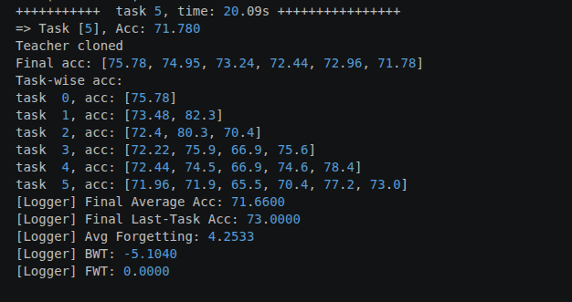
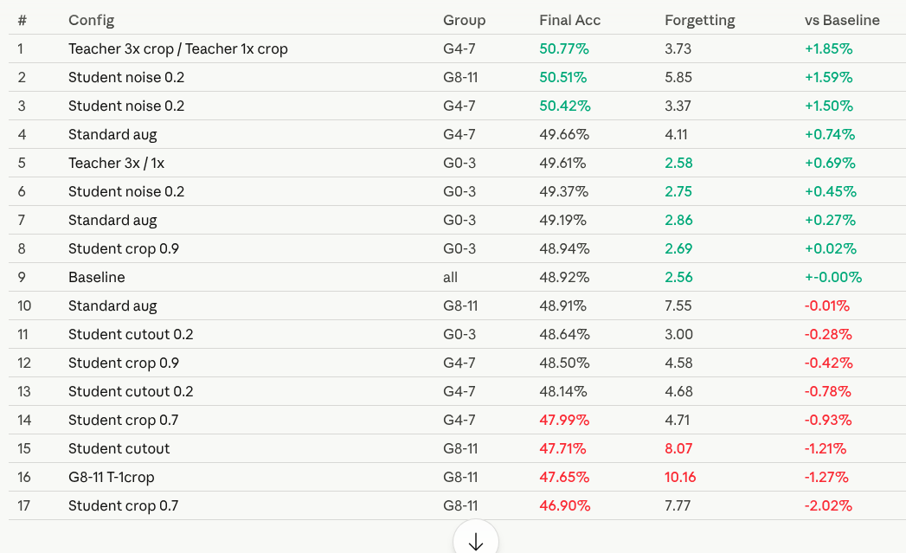
Few-Shot Continual Learning for Robotics with CLIP
Goal: To develop a Few-Shot Continual Learning approach that enables robots to learn new visual categories from very few examples without forgetting previously learned ones.
Contribution: Following a comprehensive literature review, I identified weaknesses in the visual representation component of existing CLIP-based incremental learning pipelines. I then designed a novel method based on layer-wise knowledge distillation for CLIP Vision Transformers, and explored complementary techniques including LoRA adaptation, teacher input augmentation, and optimal transport for improved representation alignment. I was responsible for the full research cycle: literature synthesis, experimental design, implementation, benchmarking, and dataset curation.

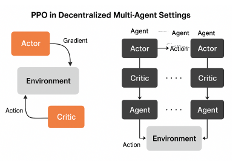
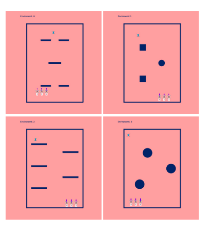
Multi-Agent Reinforcement Learning for Cooperative Autonomous Navigation and Pursuit in Drone Swarms
Goal: To build a MARL system enabling a swarm of autonomous drones to cooperatively pursue a target, and to validate it on real hardware.
Contribution: I designed and built the entire framework from scratch — including a custom simulation environment, a modular PPO-based training pipeline, and real-time visualisation tools. I extended the baseline PPO algorithm to support partial observability and stable multi-agent cooperation, then deployed the trained policies onto physical Crazyflie 2.1 drones, achieving robust real-world swarm coordination.
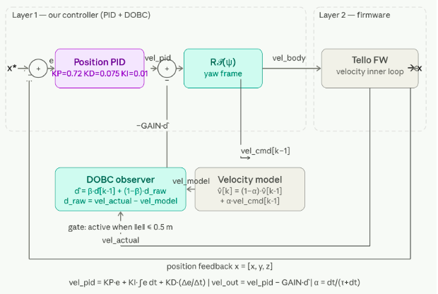
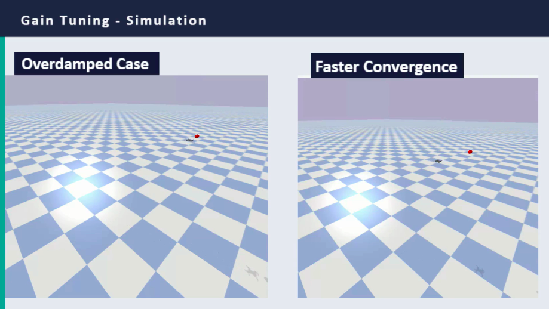
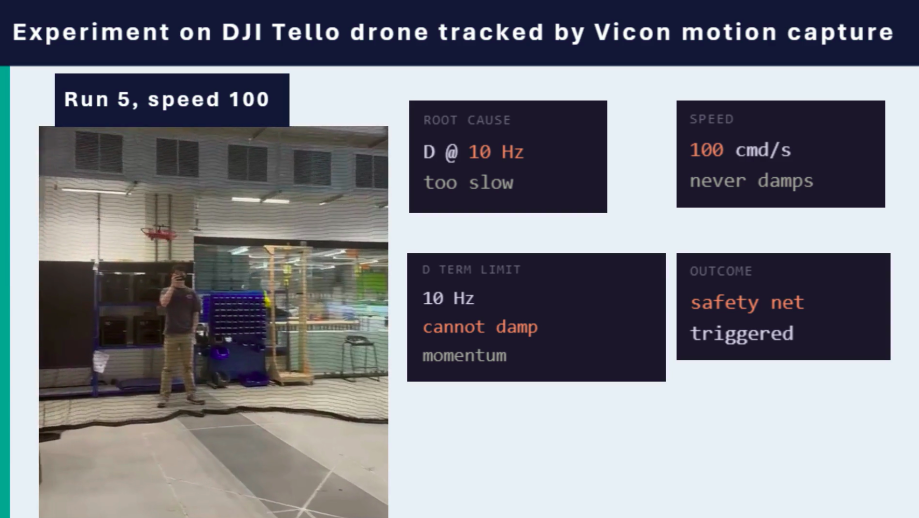
UAV Position Stabilisation with PID and Disturbance Observer-Based Control (DOBC)
Goal: To design, tune, and validate a feedback controller for 3D position stabilisation of a UAV, combining a PID baseline with DOBC as an advanced disturbance rejection method, tested in both simulation and on a real DJI Tello quadcopter.
Contribution: I designed a cascade architecture where a position PID generates velocity setpoints corrected by a DOBC layer to reject disturbances such as wind and motor asymmetry. The observer estimates disturbances from the deviation between actual and modelled velocity, with a proximity gate restricting corrections to the hold phase to prevent interference during approach. Gains were tuned via Ziegler–Nichols sequential isolation, and real-drone validation used Vicon motion capture across varied speed and gain conditions. Key findings were that the 10 Hz control rate limits derivative damping during fast approaches, and that an elevated DOBC gate caused yaw integral saturation through an unmodelled coupling, identifying yaw–DOBC decoupling as future work.
🎥 Video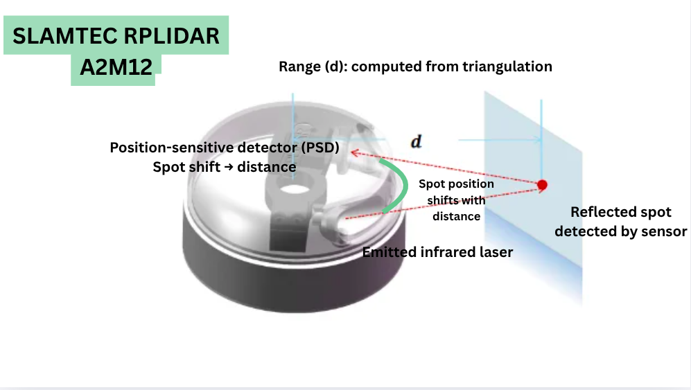
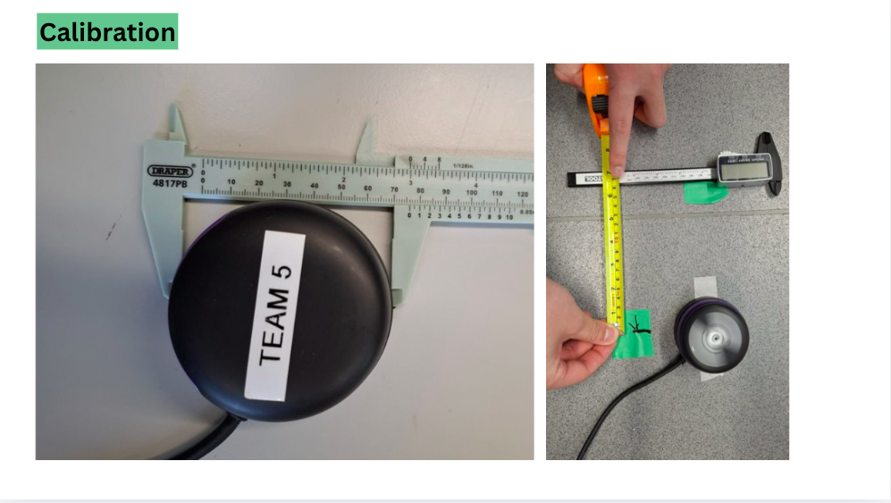
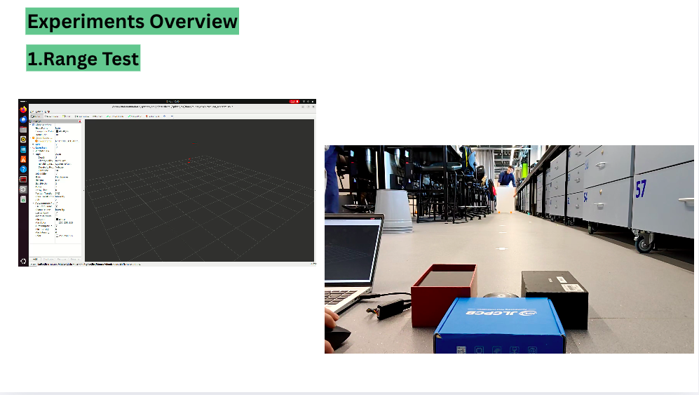
Characterisation of the SLAMTEC RPLIDAR A2M12 for Autonomous Mobile Robot Perception
Goal: To empirically characterise the SLAMTEC RPLIDAR A2M12 lidar unit across key performance metrics — range, accuracy, vertical tolerance, spatial resolution, and small-object detection — and translate the findings into concrete integration recommendations for the Leo Rover's autonomous perception stack.
Contribution: I co-designed and executed a structured experimental campaign characterising the RPLIDAR A2M12 across range, accuracy, vertical tolerance, spatial resolution, and small-object detection, using RoboStudio for raw triangulation access with five repetitions per test. Key findings were that surface colour had negligible effect on range indoors; distance was systematically overestimated beyond 3 m; vertical sensing was extremely narrow (0.2°–0.6°), creating blind zones that shrank with distance; spatial resolution improved 40% at 5 Hz; and objects under ~20 mm became undetectable below one metre. These results informed recommendations for Leo Rover integration: applying a short-range bias correction for SLAM, increasing obstacle margins for slender objects, and mounting the lidar with a slight downward pitch to reduce vertical blind zones.

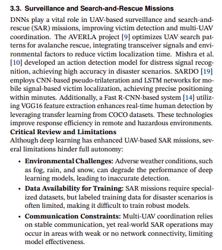
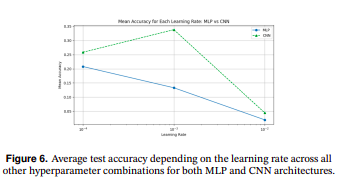
Deep Learning in Cognitive Robotics – UAV Applications and Vision Models
Goal: To critically survey the state of deep learning for autonomous UAVs and complement the analysis with hands-on benchmarking experiments.
Contribution: I produced a comprehensive survey-style analysis covering DNNs in robotic vision, navigation, and decision-making for UAVs, critically evaluating architectures such as CNNs, LSTMs, and RL frameworks across tasks including obstacle avoidance, surveillance, and multi-UAV coordination. I assessed both technical limitations and ethical considerations, and ran benchmarking experiments comparing MLP, CNN, and ResNet-18 on CIFAR-100 to ground the analysis practically.
Artificial Intelligence and Machine Learning

Machine Learning Laboratory – Linear Classification and Optimization Analysis
Goal: To develop a rigorous mathematical understanding of linear classification and gradient-based optimisation, and apply it to a real neural network task.
Contribution: I derived the gradient of the hinge loss with L2 regularisation from first principles, expressed it in vectorised form, and formulated the weight update analytically. I then systematically analysed how learning rate affects convergence and accuracy, and applied these principles to a neural network for air quality prediction, comparing SGD and ADAM optimisers and validating convergence behaviour empirically.
Computer Vision
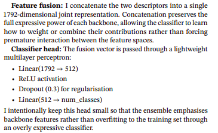
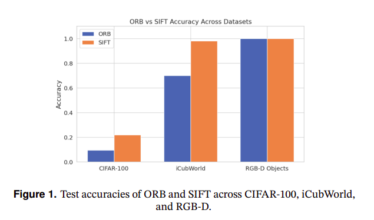
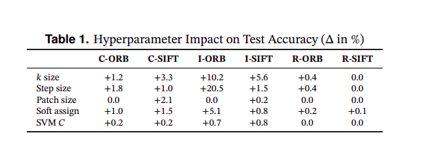
Robust Object Classification for Robotics Using Classical Descriptors, CNNs, and Transfer Learning
Goal: To systematically compare classical and deep learning approaches to object recognition across datasets relevant to robotic perception.
Contribution: I designed and implemented multiple end-to-end recognition pipelines: SIFT/ORB with Bag-of-Words and SVMs, custom CNNs, fine-tuned ResNet-18 and MobileNetV2, and a multi-backbone ensemble model. I conducted hyperparameter optimisation and ablation studies across CIFAR-100, RGB-D Object, and iCubWorld datasets, identifying the conditions under which classical pipelines remain competitive versus when deep learning becomes necessary in robotic perception.
Natural Language Processing
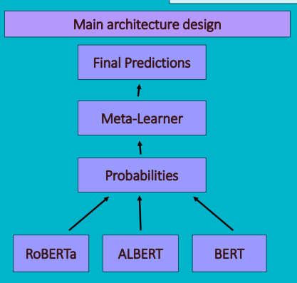
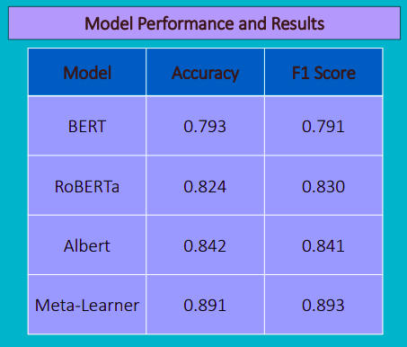
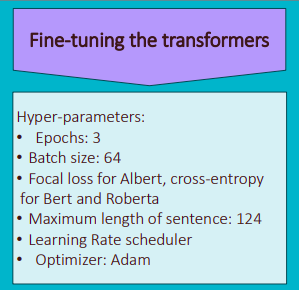
Meta-Learning Approach for Natural Language Inference
Goal: To improve performance on Natural Language Inference tasks by combining multiple transformer models through a meta-learning architecture.
Contribution: I co-developed a meta-learning system aggregating probability outputs from fine-tuned BERT, RoBERTa, and ALBERT using a neural meta-learner. My individual contributions included authoring model cards and a poster presentation covering design rationale, ethical considerations, and interpretability, as well as developing a modular demo codebase with clearly separated training, validation, and inference stages to prioritise reproducibility.
Database Systems

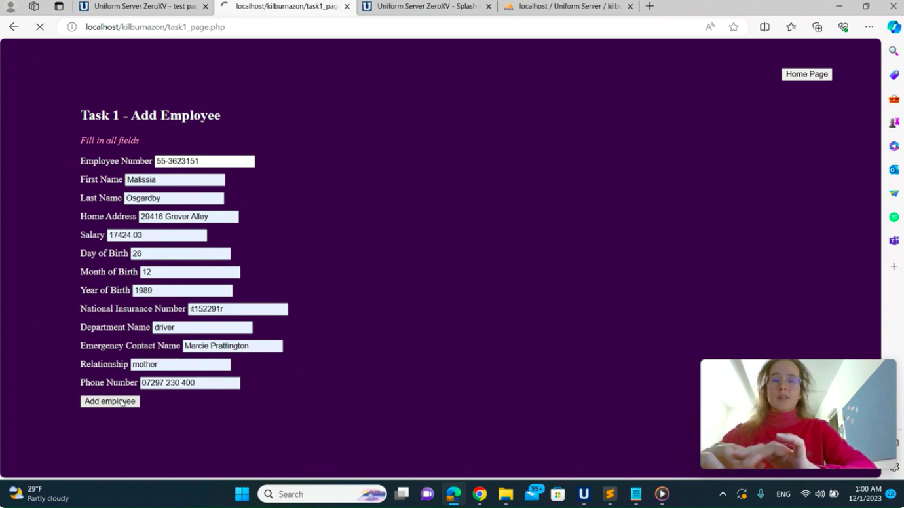
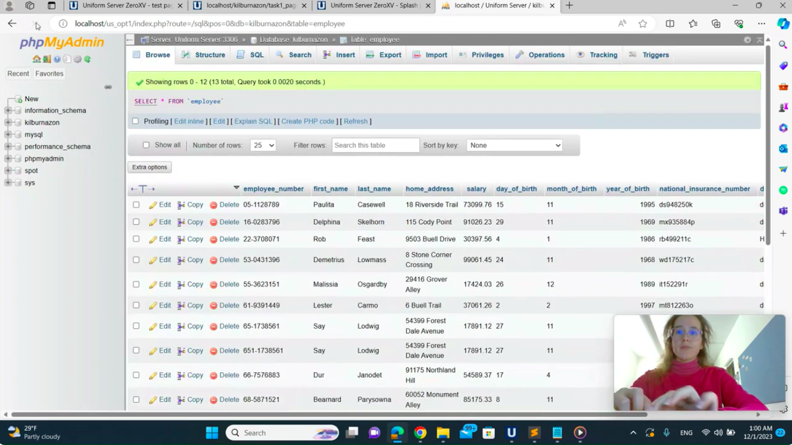
Amazon-Style Relational Database Design and Implementation
Goal: To design and implement a fully normalised relational database for a large-scale logistics and retail system.
Contribution: I produced an Entity Relationship Diagram covering 13 entities, performed normalisation to 3NF, and implemented the physical data model with robust primary–foreign key relationships in SQL. I built query functionality for employee search and filtering, emergency contact retrieval, and data updates, optimising queries for retrieval speed and referential integrity.
Distributed Systems and Networking

Distributed Messaging System for Healthcare Applications
Goal: To design a distributed messaging protocol supporting multiple concurrent clients for reliable healthcare data communication.
Contribution: I implemented a socket-based client–server system enabling dynamic user registration, private messaging, and broadcast communication with real-time synchronisation. I managed global socket tracking and user dictionaries for reliable message routing, then extended the protocol in a second iteration to improve scalability, modularity, and fault tolerance.
Embedded Systems and Hardware Design
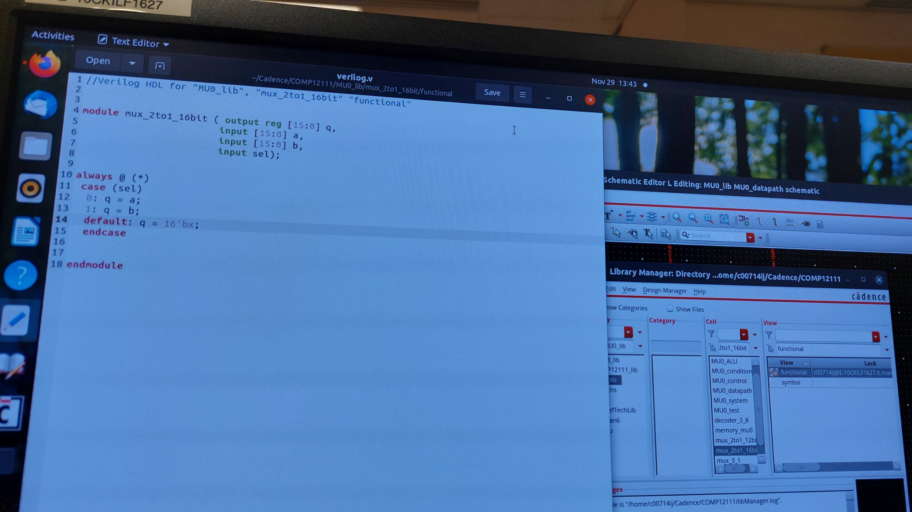
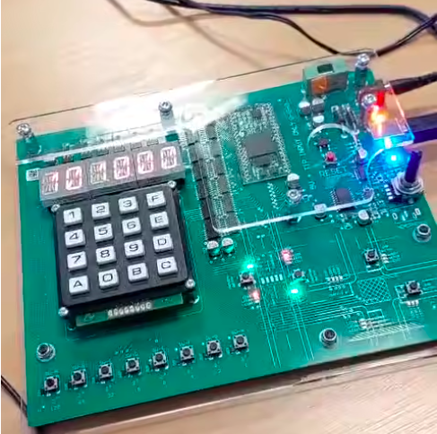
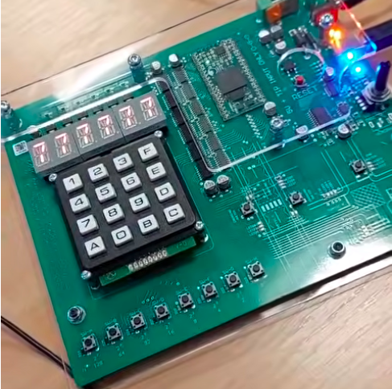
Mini Processor Design and FPGA-Based Interactive Game
Goal: To design a custom processor in hardware and deploy it on an FPGA to run an interactive assembly-level game.
Contribution: I designed the processor in Cadence, incorporating 4-bit, 8-bit, and 16-bit adders, logic gates, and control modules. After synthesising and deploying it to an FPGA board, I programmed an assembly-level game ("Convert to Decimal") featuring LED output, hardware input, sound effects, traffic-light feedback indicators, and a reward melody — demonstrating the full path from digital design to an interactive embedded application.
Other Research & Innovation Projects
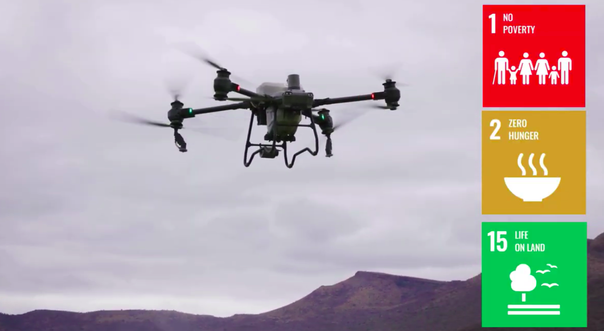
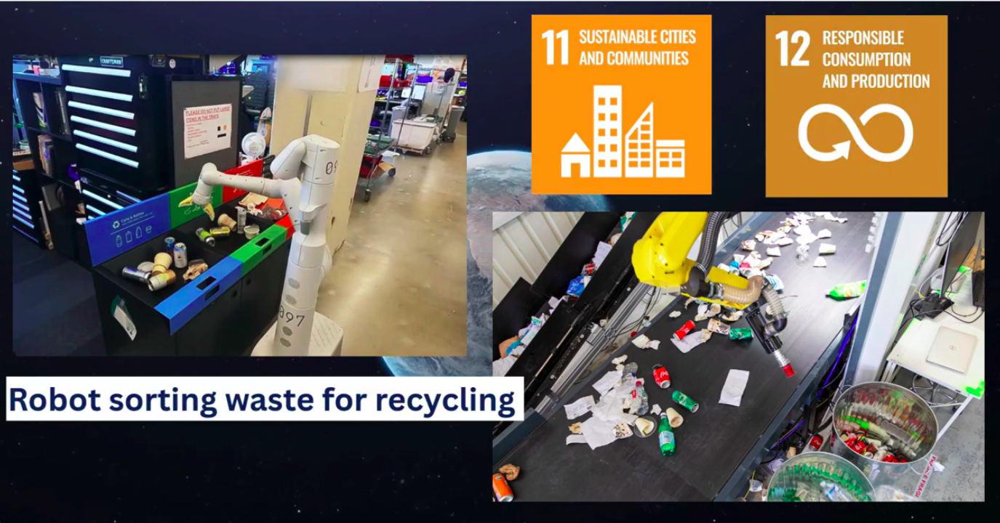
Robotics for Sustainable Development (UN SDGs Video Project)
Goal: To produce an educational resource communicating how robotics can contribute to the UN Sustainable Development Goals, including ethical dimensions.
Contribution: I researched robotic applications across sectors, developed an in-depth use case linking robotics to a specific SDG, and examined ethical considerations using frameworks such as IEEE Ethically Aligned Design. I then produced a concise 5-minute video designed as a graduate-level teaching resource, communicating technical, societal, and ethical dimensions clearly within a strict time constraint.

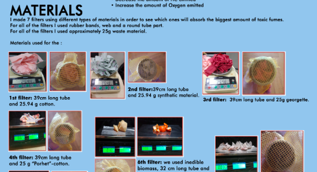
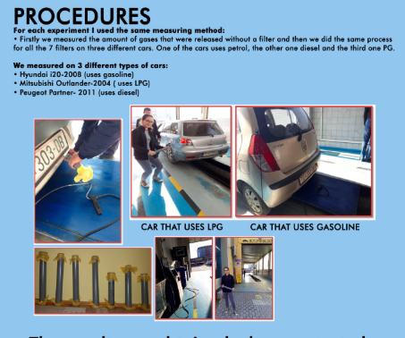
Greening Solution for Environmental Pollution – Converting Waste Clothes into Smart Car Exhaust Filters
Goal: To investigate whether waste textiles and biomass could serve as effective, low-cost car exhaust filters to reduce harmful emissions.
Contribution: I independently designed and conducted 24 experiments across different fuel types, measuring CO, CO₂, and hydrocarbon absorption efficiency — achieving up to 100% CO, 96% HC, and 79% CO₂ absorption. I authored the full 86-page research report and presented the work at international competitions, receiving an Honourable Mention at Genius Olympiad 2019, Silver at Inofair 2020, and Silver at Euroinvent 2020.
Education
MSc (Hons) Robotics with Extended Research
The University of Manchester | Sep 2025 – Jun 2027
BSc (Hons) Computer Science – First Class Honours (80%)
The University of Manchester | Sep 2022 – Jun 2025
- Ranked in the top 5% of the class.
- Recipient of a full-tuition and partial living-cost scholarship by the Government of North Macedonia.
Yahya Kemal College
Skopje, North Macedonia | Sep 2018 – Jun 2022
- Macedonian State Matura: All 5s (highest grade); Top 3.4% nationwide in Mathematics.
- Full-tuition scholarship for outstanding entrance exam results (mathematics, physics, logic).
- Recognized for excellence in mathematics and informatics competitions:
- National Math Olympiad – 1 second place, 2 honourable mentions
- National Informatics Olympiad (C++) – 1 second place, 3 third places
- International Math Olympiad “Kangaroo” – Silver medal
Yale Young Global Scholars (YYGS) – Innovation in Science and Technology Track
Yale University | Jul 2021
- Participated in an interdisciplinary program exploring robotics, biology, and technology.
- Enhanced research, innovation, and science communication skills through collaborative case studies and discussions.
Contact
If you'd like to connect, collaborate, or discuss opportunities in robotics, AI, or computer vision, I'd be delighted to hear from you. Please feel free to reach out using the contact details below or connect with me through my LinkedIn and GitHub profiles.
- Email: ivajorgusheskal@gmail.com
- University Email: iva.jorgusheska@postgrad.manchester.ac.uk
- Phone: +44 7522 270742
- Location: Manchester, United Kingdom
I look forward to hearing from you!
Back to top ↑